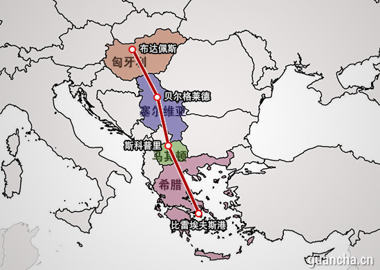

2015-02-11 10:05:00
希腊在2001年加入欧元区时，欧元已经在银行界通行了两年。原本大家都觉得希腊的财政太过糟糕，所以没有让它成为欧元区的创始会员；但是希腊政府看到其他南欧国家在加入欧元区之后，发行公债的利率成倍降低，觉得有利可图，所以雇了高盛来为它作假帐，随后就凭着假造的帐本而获得进入欧元区的资格。其后当然是在举债和作帐两方面都变本加厉，到2008年美国的金融危机爆发之后，全球银根紧缩，希腊以债养债的老鼠会式财政终于撑不下去了，到2010年眼看着就要倒帐，结果在美国和德国的授意之下，欧盟+欧元中央银行+国际货币基金会的Troika（这是俄文，即三巨头委员会）投入了1000多亿欧元来买下其实已经一文不值的希腊公债，使希腊暂时得以留在欧元区。
欧元的国际地位还不及美元，一直到最近这几个月才在美国首肯下开始大印钞票。2010年的第一轮和2012年的第二轮救援，都需要个别欧元区国家的认购捐助，其中最主要的资金来源就是德国。德国藉此而得以逐步掌控欧盟和欧元（参见前文《美国的欧洲代理人板块重整》），并对希腊和其他受援国的财政强加整顿。这对习惯寅支卯粮的受援国经济打撃极深，尤其是青年人的失业率高涨到25-55%不等，几年下来失业率仍居高不下，社会和政治上的反弹自然难免。
虽然在希腊之后，财政危机传染到欧元区几个较弱的经济体（总称欧猪五国），但是希腊不但是始作俑者，也是问题最大最深的国家。从2010年起，就有人建议把它踢出欧元区，然后再拯救其余比较“无辜”的国家（这叫做Grexit，即Greece Exit的缩写）。当时德国首相默克尔（Angela Merkel）却有两个因素掣肘而不得不打开銭包：1）在此前八年，买下大笔希腊公债的，主要是欧元区的银行，尤其是德国的中小银行（我还在美国金融界时，就常听到高盛和其他美国银行的高管讥笑德国人天真，美国的债信评价公司说什么债劵是AAA的，德国人就乖乖买下；当然美国银行界早已收买了那些债信评价公司，所以在2008年房產次贷危机中，高盛反而赚了，就是因为它的房贷衍生產品都已经贴上AAA的标签，转手卖给像德国的中小银行这様的天真顾客）；如果希腊倒了，这些银行也会跟着倒，到时德国政府反而要花几倍的銭消灾。2）如果希腊倒了，做空欧猪金融的对衝基金在大赚一笔之后，必然会继续攻撃下一只欧猪，拯救他们的代价也会如滚雪球一様地增高。
2015年一月25日，对高失业率再也受不了的希腊选民投票选出了以Syriza（Συνασπισμός Ριζοσπαστικής Αριστεράς, Synaspismós Rizospastikís Aristerás，极左联盟）为首的新政府。Syriza的主要政见就是要停止财政紧缩，重新开始发放福利。但是Troika当初援助希腊的条件就是要它紧缩财政以节省税收来偿还公债，所以Syriza一上任，双方立刻开始角力，而且时间紧迫，到这个月底就会见分晓；这是因为在二月底前，Troika的下一笔救援资金就必须到位，否则希腊国库空虚，眼看着得要赖帐了。Troika幕后的真正老板是默克尔（IMF是美国人的，但是默克尔控制了欧盟和欧元中央银行，两票对一票，美国人也拿她没办法），而她的考虑却已和五年前大不相同了：1）在过去五年里，希腊公债已经大半由Troika接手，不再有对欧洲银行界造成连鎻反应的威胁。2）在上次危机后，欧盟成立了欧洲金融稳定基金（European Financial Stability Facility），足以吓阻对衝基金。3）其他的欧猪也都蠢蠢欲动（请注意，蠢蠢欲动的是他们的极左或极右的在野政党，不是执政党；如果这些执政党不想步希腊前政府的后尘，最简单的办法就是让Syriza失败，所以Syriza想要联合五猪对德国摊牌，注定是对猪弹琴），如果默克尔对希腊让步，它们也会跟进，那么不但德国的财政必须真的为那许多国家还不出来的公债买单，而且德国在过去五年好不容易整合出来的新欧洲霸权也会付诸流水。综合以上的考虑，德国要对希腊做根本性让步的可能极低，所以除非Syriza悬崖勒马，Grexit就成了唯一的选项。
那么在国际战略政略层面，这新一轮的希腊危机有什么意义呢？祸起萧墙之内，最大的输家当然是德国和它控制下的欧盟，问题只在于最后停在哪个止损点。对美国来说，强势的德国有碍美国对欧洲的间接操弄，而Grexit却又使希腊成为中俄可以收养的孤儿，所以最理想的发展是德国对希腊让步，欧洲保持完整但持续衰弱；这也是欧巴马政府这几天力挺Syriza的原因，但是我已经在前面解释过为什么默克尔不会让步。美国和德国都吃亏的后果，自然有另外的赢家，那就是中俄的抗美联盟。欧盟在新希腊危机之后，必然更加无心无力去管乌克兰的閒事，俄国会获得较大的喘息空间；但是真正稳操胜卷的，是中共。Syriza一上台，就暂停出售国有财產，包括中方有意买下的比雷埃夫斯港，似乎中国吃亏了。但是如果Syriza对德国妥协，那么不但这个港口会重上柜台，所有的欧猪也必须更积极地变卖国有财產，而最高兴的买家必然是中国。如果Syriza拒絶妥协，那么在被Grexit之后，对资金的需求只能更为飢渴，最后仍然是必须投入中共的门下，而且不只是经济上会有依赖，在政治和军事上也会开始离欧入亜，脱离北约只是时间问题（唯一留在北约的理由，将只是为了避免北约偏袒土耳其，所以中俄要对北约挖墙脚，必须同时挖掉土、希两国）。
对中共来说，希腊的战略价值在于它是中国在欧洲的理想桥头堡，海运线从中国到欧洲后的第一个适合卸货的港口就在希腊。这也是为什么李克强在2014年十二月访问Serbia时，倡议延伸当地的铁路，以建立所谓的中欧海陆快线的原因。这条中欧海陆快线是中共“一带一路”大战略中，在欧洲海路的主环节，而希腊就是中欧海陆快线的门户。希腊离开欧元区，对中共的长期战略来说，是非常有利的。如果是美国人面临这种情形，他们会先对Syriza承诺无限的援助，等希腊被踢出欧元区后，再重新谈判；不知中共会不会也玩这把戏？

中欧海陆快线。沿途其他国家都已点头了，就等希腊上车。
【后注一】今天（2015年二月20日），欧盟与希腊达成协议，将即将到期的贷款展延四个月到六月底，以便双方有时间继续谈判。在过去的三周里，希腊新政府已经被迫做了持续的让步；德国显然是觉得再给四个月，Syriza最终可能会完全投降（当然表面上会给他一点面子），使欧元区得以保持完整。尤其是今年七月有更大笔的贷款到期，如果Syriza不让步，基本上除了Grexit之外没有其他的路可走（例如来自中共的贷款；这原本就是不可能的，不过Syriza在十天前还公开作了白日梦）。
【后注二】今天（2015年七月6日）看到一篇CNN介绍希腊从加入欧元一直到公投拒绝债权人要求的歷史（参见http://edition.cnn.com/2015/07/06/europe/greece-how-did-we-get-here/index.html）。讲到希腊做假账的时候，居然对高盛一个字也不提。我欢迎相信美国有言论自由的人解释一下，为什么这么重要的资讯会被删除了。